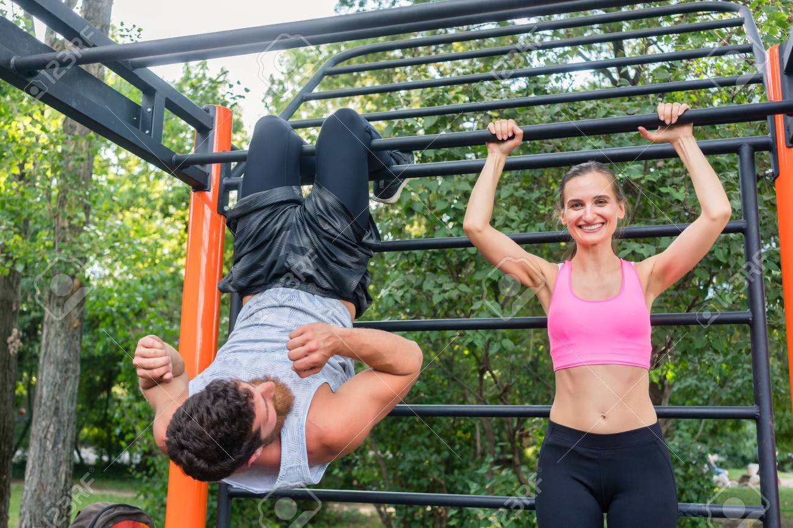
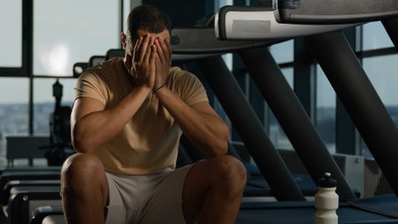
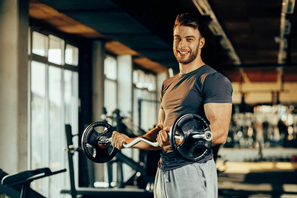

¿Por qué elegir la Calistenia sobre el Gimnasio?
La calistenia y el gimnasio ofrecen beneficios únicos. Aquí exploramos por qué podrías preferir la calistenia y cuáles son sus ventajas y desventajas.
También añadiremos una comparación del gimnasio para que puedas observar todas las diferencias, respectivamente.
Ventajas de la Calistenia
- Accesibilidad : Puedes realizarla en cualquier lugar sin necesidad de equipo costoso.
- Versatilidad : Los ejercicios pueden adaptarse a cualquier nivel de habilidad.
- Funcionalidad : Mejora la fuerza funcional y la movilidad.
- Economía : Sin necesidad de membresías de gimnasio o equipo costoso.
- Naturalidad : Usa el peso corporal, lo que reduce el riesgo de lesiones.
Desventajas de la Calistenia
- Progresión limitada : Puede ser difícil aumentar la resistencia de forma incremental.
- Sobrecarga : Al realizar ejercicios, puede existir la posibilidad de sufrir lesiones si no se hacen correctamente.
Ventajas del Gimnasio
- Equipos variados : Acceso a una amplia gama de máquinas y pesos libres.
- Progresión controlada : Fácil de incrementar cargas de forma precisa.
- Ambiente controlado : Entrenamiento en interiores sin preocuparse por el clima.
Desventajas del Gimnasio

- Costo : Membresías y equipos pueden ser costosos.
- Accesibilidad : Necesitas desplazarte hasta el gimnasio, lo cual puede ser inconveniente.
- Horario : Dependencia de horarios de apertura del gimnasio.
- Sobrecarga : Mayor riesgo de lesiones por el uso incorrecto de máquinas o pesos libres.